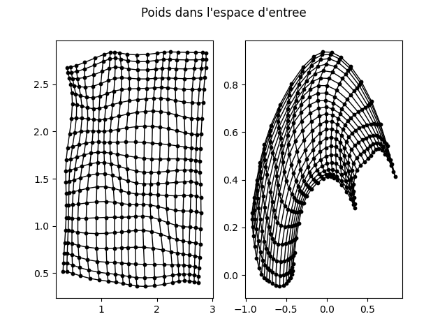
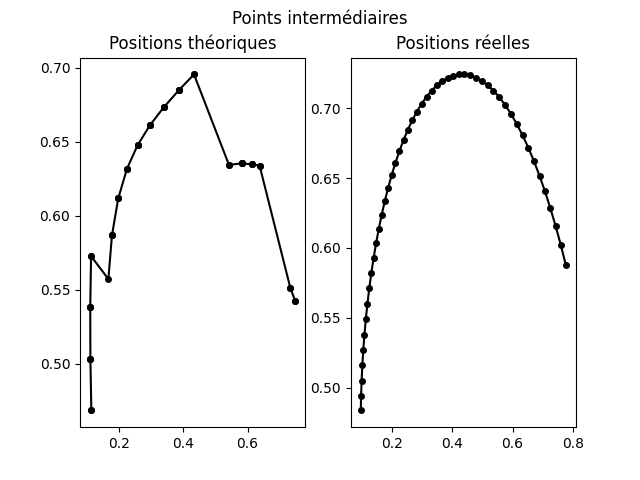
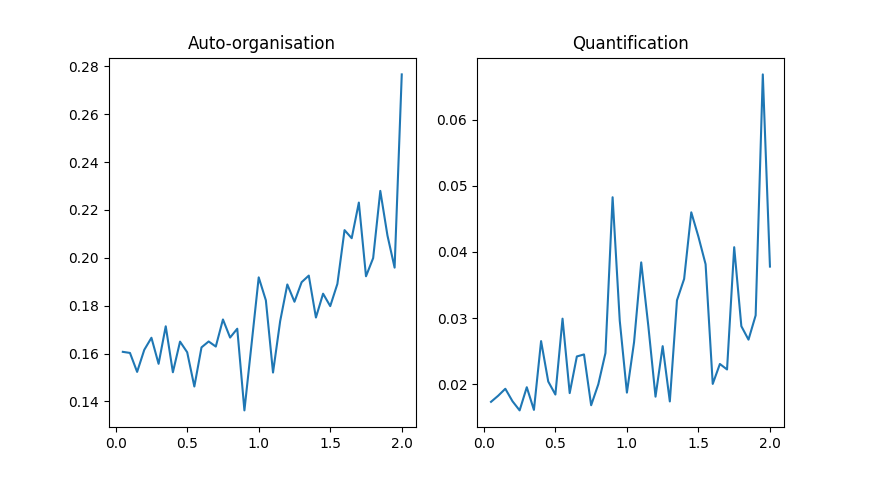

Vue d'ensemble
Ce projet d'Intelligence Artificielle, réalisé en binôme, se concentre sur l'apprentissage non supervisé à travers les cartes auto-organisatrices de Kohonen. L'objectif était d'adopter une démarche scientifique pour tester, quantifier et visualiser l'impact des différents paramètres d'apprentissage avant de l'appliquer à un cas pratique : la prédiction des mouvements d'un bras robotique.
Étude théorique et analyse de l'algorithme
Une série d'expériences a été mise en place via une fonction de simulation pour étudier le comportement de l'algorithme sur des jeux de données uniformes et non-uniformes. L'analyse s'est concentrée sur trois paramètres fondamentaux :
- Taux d'apprentissage (η) : Fixé idéalement autour de 0.05. Une valeur trop élevée empêche la stabilisation (erreur de quantification élevée), tandis qu'une valeur à 1 superpose directement les neurones sur les entrées sans organisation globale.
- Largeur du voisinage (σ) : Paramètre influençant la densité de l'auto-organisation. S'il est trop faible, les neurones ne s'organisent pas ; s'il est trop élevé, la carte devient excessivement resserrée au centre.
- Pas de temps (N) : Fixé à 30 000 pour les tests finaux. Bien qu'il ait un impact mineur sur des jeux de données simples, un N élevé tend à stabiliser l'auto-organisation.
Application : Bras Robotique
Le modèle entraîné a été utilisé pour résoudre des problèmes de cinématique inverse et directe sur un bras robotique à deux articulations.
- Prédiction spatiale et motrice : En trouvant le neurone gagnant (le plus proche), l'algorithme est capable de déduire la position spatiale (x, y) à partir d'une position motrice (angles θ1, θ2), et inversement.
- Génération de trajectoires : En interpolant mathématiquement les positions motrices entre un point de départ et d'arrivée, la carte permet de prédire avec précision la suite des positions spatiales prises par la main du robot.
Galerie et Résultats


Architecture technique
- Langage : Python.
- Calcul matriciel : NumPy, indispensable pour la gestion optimisée des vecteurs de poids, des distances euclidiennes et des interpolations spatiales.
- Visualisation de données : Matplotlib, utilisé pour tracer l'évolution des erreurs (quantification vectorielle, auto-organisation) et générer les rendus visuels des cartes et trajectoires.